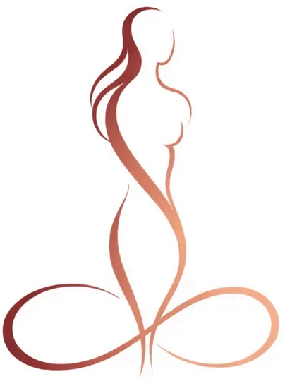
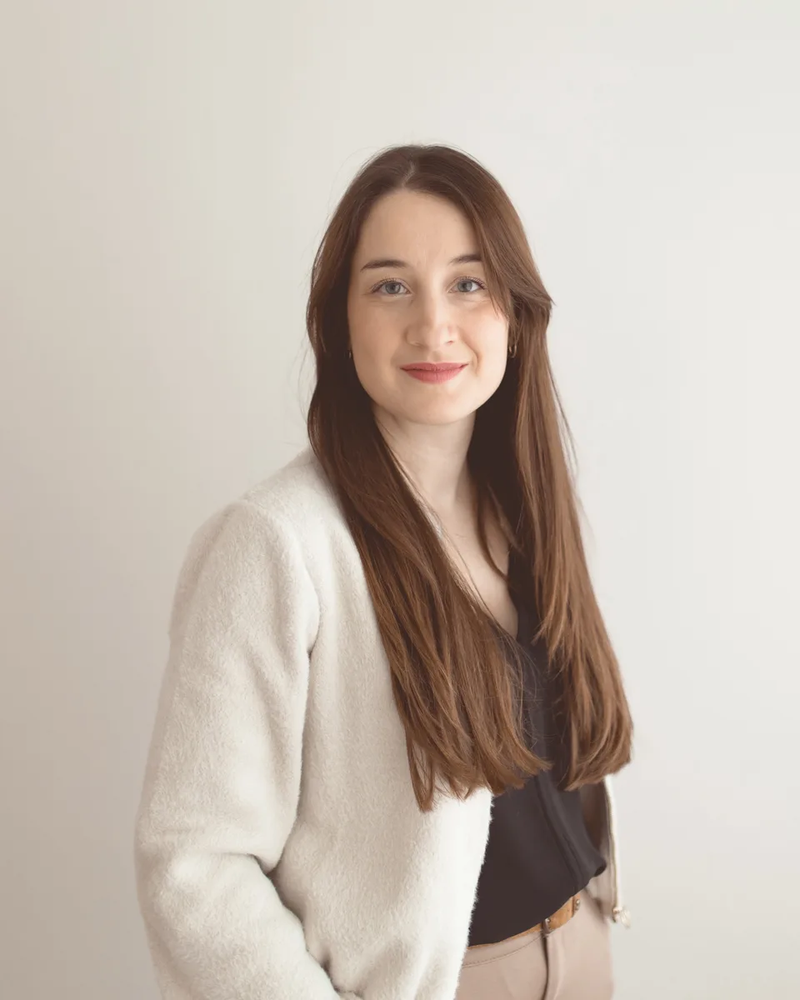

Well informed through menopause
From perimenopause to the years after menopause. Clear, honest, with a doctor at your side.
Something new is taking shape here. The site is still under construction and the content will grow step by step. If you would like to know when it launches, sign up below.

Get notified when we launch
A short email when the site is ready and when there is news. Rarely, calmly, no advertising. You can unsubscribe at any time with one click.

About me
I was born in Lisbon and grew up in Basel, where I also studied medicine. I then moved to eastern Switzerland and trained as a specialist in gynaecology and obstetrics in Grabs and Chur, most recently as a senior physician. Today I live in Liechtenstein with my husband and our two children. Since 2023 I have been working at the Gynorina practice in Buchs, Switzerland.
Menopause often begins years before the last period and its effects continue long after. In a regular consultation there is rarely enough time for the questions women really have during this phase. Some never get asked at all. Frauenkompass is meant to make room for them: clearly explained, medically sound, without alarm and without empty phrases.
I speak German, Portuguese, English, Spanish and French.
- 2014
- Degree in human medicine, University of Basel
- 2015–2019
- Resident physician, women’s clinics at Grabs Hospital and Cantonal Hospital of Graubünden
- 2019–2022
- Senior physician, women’s clinic, Grabs Hospital
- 2022
- Specialist title in gynaecology and obstetrics
- Since Feb. 2023
- Specialist, Gynorina practice, Buchs SG
- Advanced course
- Gynaecological Endocrinology Advanced with Prof. Michael von Wolff and Prof. Petra Stute, University Clinic of Gynaecology, Inselspital Bern
- Further training
- Certificate in obstetric ultrasound
“No question is too small. And none too personal.”